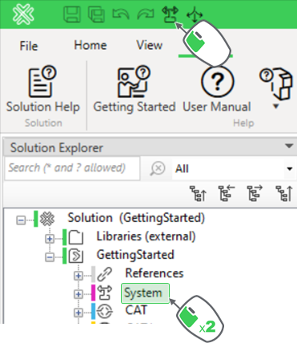
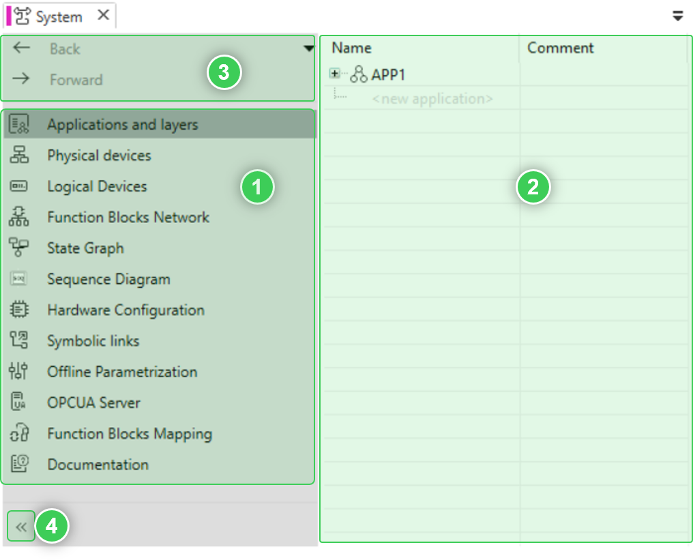

System Editor Overview
Before starting the development of the application, let’s have an overview of the System editor.

|
System editor is the place where all the software and hardware aspects of the applications are set up and developed. |
To access the System editor:
-
Double-click on the node System
or
-
Click on its shortcut icon in the Menu bar.


|
The System editor window is opened. |
The System editor is composed of the following elements:

1 | The list of all the editors of the System editor. The one selected in the image is Applications and layers.
2 | The workspace of the editor currently selected from the list, here Applications and layers.
3 | The easy navigation buttons. The editors previously opened are stored in an history and it is possible to navigate through this history thanks to these Back and Forward buttons. The full history can be open with the downward arrow in the top right of this 3rd area.
4 | The hiding button allow the show or hide the name of the editors. By hiding the editors’ name, it will give more space to the workspace of the editor currently selected.
Here is a description of the editors available in the System editor list.
Applications and layers
Shows what are the various applications available on the project and the comments describing them.

|
NOTE:
Each application is independent and cannot dialog with the others. |
Each application can have several layers. All layers can dialog together.
|
|
A layer is another window inside an application. Its purposes are to separate groups of function blocks and make the application easier to understand. |
Physical devices
Where all the physical devices handled by the project are defined.
It is then possible to add different types of devices such as: M251dPAC, M262dPAC, SoftdPAC and so on.
Once added, it is then possible to:
-
Design their physical architecture by setting up their IP address, designing communication network and so on.
-
Commission the devices and active their security
-
Monitor them once they are on use.
Logical Devices
To create and handle logical devices.
Logical devices are used to connect and convert information from the application (based on the buildtime software) to the physical devices that will be assigned to them.
|
|
Most of the time, a logical device is linked to a physical one. One of the exceptions is when the logical device is simulated, like in the Getting Started. |
The logical devices are executed by the runtime software, and logically run all the applications mapped to them on the physical device they are assigned to.
|
|
The mapping defines by which resources the applications will be executed. This mapping feature allows splitting the solution to different resources. |
|
|
NOTE:
The mapping aspect has its own editor, Function Blocks Mapping, and will be explained on the topic Mapping. |
Function Blocks Network
Where the application is programmed, and where the workspace of the applications and the resources are edited.
It is possible to completely manage them by adding, modifying or deleting functions blocks and resources to the workspaces.
|
|
NOTE:
Function Blocks Network provides a graphical view of all the elements added to it. |
State Graph
This editor is used when creating sequence control applications.
|
|
NOTE:
As the Getting Started does not develop a sequence control application, this aspect will not be detailed here. To know more about this editor, refer to the User Manual document. |
Sequence Diagram
This editor is used when creating sequence control applications.
|
|
NOTE:
As the Getting Started does not develop a sequence control application, this aspect will not be detailed here. To know more about this editor, refer to the User Manual document. |
Hardware Configuration
Where the connections with the physical devices are set. In this editor can be created Modbus communications, the physical inputs and outputs are linked to variables from the Function Blocks Network.
|
|
NOTE:
As the Getting Started is only doing simulation, this aspect will not be detailed in this document. Please refer to the User Manual document to know more about this. |
Symbolic links
Where all the symbolic links used in the project are listed.
|
|
NOTE:
Symbolic links is a specific way of linking function blocks. This way of linking will not be detailed in the Getting Started. Please refer to the User Manual document to know more about this. |
Offline Parametrization
Where the initial values of all the parameters are set. So when the project is deployed and run, all the parameters will have as first value the one indicated in the Offline Parametrization editor.
|
|
NOTE:
The parameters already have standard initial value assigned to them, so only the none standard values will have to be modified. |
OPC UA Server
Where the parameters of the OPC UA server are set.
|
|
NOTE:
Again, as the Getting Started is only doing simulation, this aspect will not be detailed in this document. Please refer to the User Manual document to know more about this. |
Function Blocks Mapping
Where all the function blocks programmed in Function Blocks Network are mapped to a resource, so they can be executed by a device.
|
|
NOTE:
This mapping aspect will be explained more in detail on the topic Mapping. |
Documentation
The Documentation editor allows to add meta elements to the project, like:
-
Author information
-
Abstract
-
Description
This information is the one shown when opening the project documentation, by pressing F1 on the project.
|
|
NOTE:
To have a more detailed explanation of these editors, please refer to these topics in the User Manual help document. The location of these topics is . |